X1601–X1661¶
TCC-Perspectors & Tripolar Centroids
X1601–X1661 (TCC-Perspectors & Tripolar Centroids) — 16 representative centers (from 61 in collection) constructed on acute reference triangle \((a, b, c) = (5, 6, 7)\) with unit baseline AB = \(1\).¶
Group Preamble — TCC Perspectors 1601-1634
Suppose P is a point. As noted in TCCT, p. 201, the tangential triangle is perspective to the circumcevian triangle of P. (The tangential triangle is also perspector to the circum-anticevian triangle of P, with the same perspector as for the circumcevian triangle of P.) In August 2003, Jean-Pierre Ehrmann noted that if P =\(x : y : z\) (barycentrics), then the perspector is given by
\(a^{2}(b^{4}/y^{2} + c^{4}/z^{2} - a^{4}/x^{2})\) : \(b^{2}(c^{4}/z^{2} + a^{4}/x^{2} - b^{4}/y^{2})\) : \(c^{2}(a^{4}/x^{2} + b^{4}/y^{2} - c^{4}/z^{2})\) .
Denote this perspector by T(P), and call it the TCC-perspector of P. If P =\(x : y : z\) (trilinears), then
T(P) =\(a(b^{2}/y^{2} + c^{2}/z^{2} - a^{2}/x^{2}) : b(c^{2}/z^{2} + a^{2}/x^{2} - b^{2}/y^{2}) : c(a^{2}/x^{2} + b^{2}/y^{2} - c^{2}/z^{2})\).
The transformation T carries triangle centers to triangle centers. The appearance of i → j in the following list means that T(Xi) = Xj: 1 → 3, 2 → 22, 3 → 1498, 4 → 24, 5 → 1601, 6 → 6, 7 → 1602, 8 → 1603, 9 → 1604, 13 → 1605, 14 → 1606, 15 → 24303, 17 → 1607, 18 → 1608, 19 → 1609, 21 → 1610, 25 → 1611, 28 → 1612, 31 → 1613, 32 → 33786, 35 → 33669, 54 → 1614, 55 → 1615, 56 → 1616, 57 → 1617, 58 → 595, 59 → 1618, 63 → 1619, 64 → 1620, 75 → 33801, 76 → 33802, 81 → 1621, 83 → 1078, 84 → 1622, 86 → 23374, 88 → 1623, 162 → 1624, 163 → 1625, 174 → 1626, 188 → 2933, 249 → 33803, 251 → 1627, 254 → 1628, 259 → 198, 266, → 56, 275 → 1629, 284 → 1630, 365 → 55, 366 → 1631, 508 → 23852, 509 → 1486, 512 → 33704, 523 → 30715, 648 → 1632, 651 → 1633, 662 → 1634, 1126 → 33771, 1171 → 33774, 2153 → 11142, 2154 → 11141, 3445 → 33804, 5374 → 159, 6727 → 23846, 6733 → 23845, 14085 → 101, 14086 → 30715, 14089 → 99, 14090 → 33704, 18297 → 23849, 18753 → 2176, 20034 → 25
Group Preamble — Tripolar Centroids 1635-1651
Suppose P, Q, R are collinear points not on the line at infinity. Let M = midpoint{Q, R}. The segment PM has two trisectors. The trisector closer to M here defines the centroid of {P, Q, R}.
Suppose X =\(x : y : z\) (trilinears) is a point other than X2, and define the tripolar centroid of X as the point TG(X) given by
TG(X) = x(by - cz)(by + cz - 2ax) : y(cz - ax)(cz + ax - 2by) : z(ax - by)(ax + by - 2cz).
TG(X) is the centroid of the points BC∩B'C', CA∩C'A', AB∩A'B', where A'B'C' denotes the cevian triangle of X. The notions of centroid and tripolar centroid were contributed by Darij Grinberg, August 24, 2003.
The appearance of (i,j) in the following list means that TG(Xi) = Xj:
(1,1635), (3,1636), (4,1637), (5,14391), (6,351), (7,1638), (8,1639), (9,14392), (10,4120), (11,14393), (12,14394), (13,9200), (14,9201), (17,14446), (18,14447), (21,14395), (22,14396), (24,14397), (25,14398), (27,11125), (28,14399), (29,14400), (30,14401), (31,14402), (32,14403), (37,14404), (38,14405), (39,14406), (42,14407), (43,14408), (44,14409), (45,14410), (55,14411), (56,14412), (57,14413), (63,14414), (65,14415), (66,14417), (69,14417), (75,4728), (76,9148), (78,14418), (81,14419), (83,14420), (86,4750), (88,14421), (89,14422), (98,1640), (99,1641}, {100,1642), (105,1643), (111,9171), (115,14423), (141,14424), (145,14425), (190,1644), (192,14426), (200,14427), (239,4448), (251,14428), (262,3569), (263,2491), (298,9204), (299,9205), (306,14429), (312,14430), (321,14431), (333,14432), (350,14433), (385,11183), (512,1645), (513,1646), (514,1647}, {519,6544), (523,1648), (524,1649), (525,1650), (536,14434), (551,14435), (648,1651), (671,8371), (869,14436), (899,14437), (957,3310), (985,14438), (1002,665), (1022,244), (1125,4984), (1026,14439), (1267,14440), (1646,14441), (1647,14442), (1648,14443), (1649,14444), (1698,4958), (1916,11182), (1976,6041}, {1992,9125), (2394,125), (2395,6784), (2396,6786), (2403,3756), (2407,5642), (2408,6791), (2409,6793), (2418,12036), (2419,12037), (2421,9155), (3413,13636}, {3414,13722), (3616,4773), (4049,3120), (4240,3163), (5391,14445), (5466,115), (5468,2482), (6548,1086), (9178,3124), (9213,2088), (9221,2081), (13582,1116), (14223,868)
X1601TCC-PERSPECTOR OF X5
X1602TCC-PERSPECTOR OF X7
X1603TCC-PERSPECTOR OF X8
X1604TCC-PERSPECTOR OF X9
X1605TCC-PERSPECTOR OF X13
X1606TCC-PERSPECTOR OF X14
X1607TCC-PERSPECTOR OF X17
X1608TCC-PERSPECTOR OF X18
X1609TCC-PERSPECTOR OF X19
X1610TCC-PERSPECTOR OF X21
X1611TCC-PERSPECTOR OF X25
X1612TCC-PERSPECTOR OF X28
X1613TCC-PERSPECTOR OF X31
X1614TCC-PERSPECTOR OF X54
X1615TCC-PERSPECTOR OF X55
X1616TCC-PERSPECTOR OF X56
X1617TCC-PERSPECTOR OF X57
X1618TCC-PERSPECTOR OF X59
X1619TCC-PERSPECTOR OF X63
X1620TCC-PERSPECTOR OF X64
X1621TCC-PERSPECTOR OF X81
X1622TCC-PERSPECTOR OF X84
X1623TCC-PERSPECTOR OF X88
X1624TCC-PERSPECTOR OF X162
X1625TCC-PERSPECTOR OF X163
X1626TCC-PERSPECTOR OF X174
X1627TCC-PERSPECTOR OF X251
X1628TCC-PERSPECTOR OF X254
X1629TCC-PERSPECTOR OF X275
X1630TCC-PERSPECTOR OF X284
X1631TCC-PERSPECTOR OF X366
X1632TCC-PERSPECTOR OF X648
X1633TCC-PERSPECTOR OF X651
X1634TCC-PERSPECTOR OF X662
X1635TRIPOLAR CENTROID OF X1

X1636TRIPOLAR CENTROID OF X3
X1637TRIPOLAR CENTROID OF X4
X1638TRIPOLAR CENTROID OF X7
X1639TRIPOLAR CENTROID OF X8
X1640TRIPOLAR CENTROID OF X98
X1641TRIPOLAR CENTROID OF X99
X1642TRIPOLAR CENTROID OF X100
X1643TRIPOLAR CENTROID OF X105
X1644TRIPOLAR CENTROID OF X190
X1645TRIPOLAR CENTROID OF X512
X1646TRIPOLAR CENTROID OF X513
X1647TRIPOLAR CENTROID OF X514
X1648TRIPOLAR CENTROID OF X523
X1649TRIPOLAR CENTROID OF X524
X1650TRIPOLAR CENTROID OF X525
